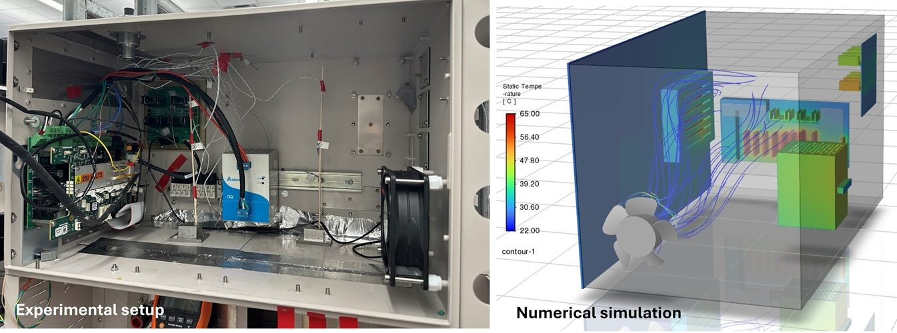

CFD / Thermal Engineer | LES & Turbulence | Electronics Cooling | Houston, TX (Open to relocation)
I am a PhD-trained mechanical engineer specializing in computational fluid dynamics (CFD), large-eddy simulation (LES),
and thermal management of engineering systems. My work spans high-fidelity, in-house LES of turbulent flows using
Fortran-based solvers on high-performance computing platforms, as well as applied CFD modeling for engineering design using
ANSYS Fluent and Icepak. I use Python for post-processing, data analysis, and workflow automation. These approaches have been
applied to problems ranging from turbulent transport and environmental flows to electronics cooling and thermal optimization.
Research and Development Intern, Valmet Analyzer Products & Integration, Houston, TX(July 2025 -- November 2025)
Performed CFD simulations to evaluate and improve thermal management of the electronic box of MAXUM II gas chromatograph device using Ansys Fluent and Icepak.
Conducted laboratory experiments to validate simulation results and support design recommendations.
Optimized fan placement, enhancing internal airflow circulation and reducing peak temperatures on critical electronic surfaces by up to 15°C.
Graduate Research Assistant @ CFD and Turbulence Modeling Group, University of Houston, Houston, TX(Jan 2021 -- Dec 2025)
Performed large eddy simulations (LES) of pollutant transport and dispersion from a localized source in oceanic and atmospheric environments using the open-source LESGO-JHU.
Developed cognitive algorithms to solve the inverse problem of pollution source localization using autonomous robots under sparse sensing conditions.
Performed large eddy simulations (LES) of ship channel and shallow bay interactions under wind and wave forcing to understand turbulent mixing mechanisms between a shallow bay and a deep ship channel.
Conducted particle image velocimetry (PIV) of vertical-axis wind turbine wake flows to analyze the impact of blade helicity on wake characteristics.
Performed detached eddy simulations (DES) of incompressible flow through various Master Flo Valve (USA) choke valve designs using Ansys Fluent to evaluate flow-induced corrosion in each design.
Numerically modeled a novel design for metal-organic chemical vapor deposition (MOCVD) equipment, capable of manufacturing superconductor tapes with superior electrical performance, using Ansys Fluent.
Graduate Teaching Assistant @ University of Houston, Houston, TX(Jan 2021 -- Current)
Served as teaching assistant in courses: Fluid Dynamics, Heat Transfer, Thermodynamics, and Experimental Methods.
Mentored students through office hours and one-on-one communication.
Graded exams and assignments and reported individual progress to the instructor.
Research Assistant @ Heat Transfer Research Center, Ferdowsi University of Mashhad, Mashhad, Iran(Sep 2019 -- Dec 2020)
Investigated heat transfer enhancement in mid-size heat exchangers through manipulating flow geometry, both numerically and experimentally.
Proposed and numerically evaluated a novel pattern of minichannel heat sinks for increasing heat absorption using Ansys Fluent.
Graduate Research Assistant @ MAPFAN Research Institute, University of Tehran, Tehran, Iran(Jan 2017 -- Aug 2019)
Studied heat transfer mechanisms in mid-size air-cooled turbogenerators using numerical simulation with Ansys Fluent.
Developed correlations for convective heat transfer coefficient in different cooling paths of air-cooled turbogenerators using statistical techniques.
Projects
Selected projects showcasing my work and research.
1. Internship project completed at Valmet, Houston, TX
Built and validated high-fidelity CFD models of conjugate heat transfer in the
MAXUM II gas chromatograph electronic enclosure using ANSYS Fluent. Numerical results were validated through laboratory measurements, with parametric
studies on fan configuration and thermal loads demonstrating significant improvements in circulation efficiency and thermal performance.

2. PhD thesis projects
2.1 Transport and dispersion of pollutant particles released from a localized source in the atmospheric boundary layer using LES